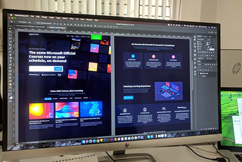
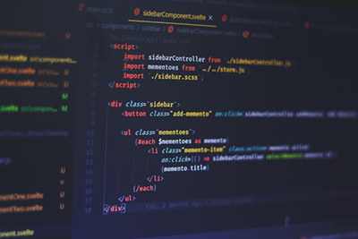

Projeler

Web tasarımı

Web Yazılımı

E-Ticaret

Veri Analizi
teknolojiyi takip edip sürekli güncellemekteyim
Web tasarımı
Web Yazılımı
E-Ticaret
Veri Analizi

Web tasarım alanında yaptığım projeler sayesinde grafik tasarım ilkeleri, HTML, CSS ve JavaScript konularında önemli deneyimler kazandım. Bu bilgileri hem kişisel web sitemde hem de ekip arkadaşlarımla birlikte geliştirdiğimiz bir eğitim web sitesi projesinde uygulama fırsatı buldum
Bu süreçte, hem teknik becerilerimi pekiştirdim hem de ekip çalışmasının önemini deneyimledim. Web tasarımın yaratıcı ve teknik yönlerini bir araya getirerek, kullanıcı dostu ve estetik tasarımlar ortaya koymaya odaklandım.
Her projeden edindiğim yeni bilgilerle kendimi bu alanda daha da geliştirmeye devam ediyorum.

Back-end geliştirme alanındaki projelerimde, veri yapıları ve algoritmalar konusunda edindiğim bilgileri etkili bir şekilde uygulama fırsatı buldum.
API entegrasyonu ve veri tabanı yönetimi gibi kritik konularda deneyim kazanarak, verimli ve ölçeklenebilir sistemler geliştirmeyi öğrendim. Ekip arkadaşlarımla birlikte geliştirdiğimiz bir eğitim web sitesi projesinde, sunucu taraflı işlemleri optimize ederek sistemin performansını artırmaya odaklandım. Back-end süreçlerinde kullanıcı ihtiyaçlarına uygun çözümler üreterek, yazılım geliştirme becerilerimi güçlendirdim.
Bu alandaki her yeni projede, öğrendiğim teknolojilerle daha derinlemesine bir bilgi birikimi elde etmeye ve kendimi sürekli geliştirmeye devam ediyorum.
E-ticaret alanında bir web sitesi tasarlama sürecim, kullanıcı odaklı ve işlevsel bir platform oluşturma amacıyla gerçekleşti.
Bu proje kapsamında, ürünlerin etkili bir şekilde sergilenmesi ve kullanıcıların kolaylıkla alışveriş yapabilmesi için kullanıcı dostu bir arayüz tasarladım. Veri tabanı yönetimi ile ürün bilgileri, stok durumları ve sipariş süreçlerini düzenli bir şekilde takip ederek sistemin verimliliğini artırdım. Ayrıca, ödeme entegrasyonları ve güvenlik önlemleri üzerine çalışarak, kullanıcıların güvenli ve sorunsuz bir alışveriş deneyimi yaşamasını sağladım.
Bu proje sayesinde hem teknik becerilerimi hem de kullanıcı deneyimi tasarımı konusundaki yetkinliklerimi geliştirme fırsatı buldum.